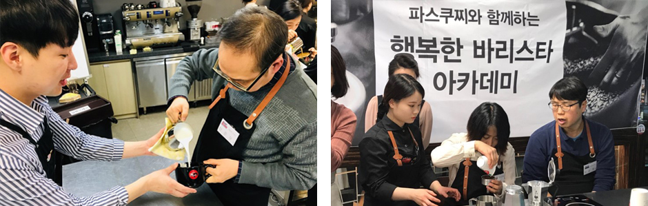
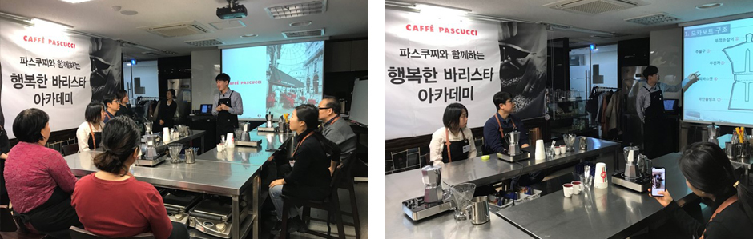
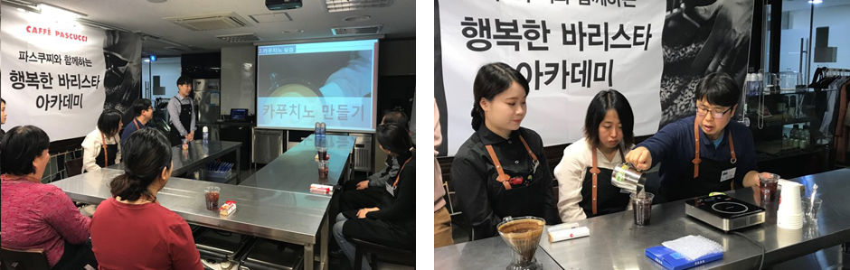
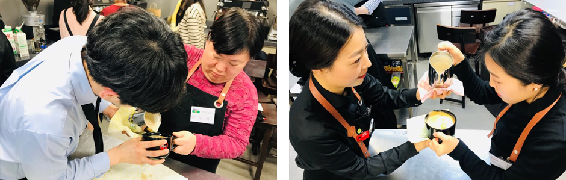
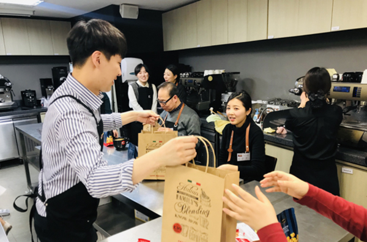

Aritcle Detail’s
-

# Pascucci Happy Barista Academy?
If you fall in love with coffee, you can't get out of it, right? Among those who love coffee, Iwas able to meet disabled barista trainees who have a special love for coffee.It is said that it is thanks to the Happy Barista Academy, one of Pascucci's social contribution activities.
-

# Great passion of instructors and trainees
After the instructor's introduction, the class begins in earnest. Theory education cannot be missed before practice, right? That way, you can do more in-depth practice. It seems that the response speed and passion of the trainees who participated today were different than ever before . Maybe because the instructor is proud of it, he keeps giving out products from the Pascucci store as gifts! At the same time, the trainees are also excited~^^v
-

# Dugudugu! The practice time you've been waiting for!
Now, the practice that trainees have been waiting for has begun. After listening to the instructor's first explanation,watch the video yourself to get acquainted with it. Espresso extraction using a moka pot, andmaking special beverages that are actually sold in Pascucci. It is so cool to see trainees who say that manufacturing with equipment used in actual stores is more meaningful,maybe that's why they are participating more actively ^^
-

# Various exercises! Latte art is the best!!
The most awaited time for trainees was the latte art time. Don't worry if you can't come up with an elaborate look! Because the Pascucci instructors teach 1:1, it is a training time that is rumored to be able to make a heart at the end of the training ^^ Isn't the form quite like a professional barista now? After a series of challenges, the hearts are completed one after another! The 'pretty latte art shape making contest' using interludes was also held in a small way, drawing laughter.
-

# Just like this! membrane! can i give it to you?
In order to reciprocate the appreciation of the trainees who warmed up the instructors with their passion and brightened up the lecture hall, we give Pascucci's representative products as gifts! The trainees are surprised and say, "Can I receive this much?" "yes! It works ^^ It's a small sincerity given because you participated hard in the education!” Astounded, today's education has been finished with a heartwarming! ascucci will continue to run generously for disabled barista trainees who love coffee in the future! Thank you ^^
[Workers at Pascucci]
Kang Seo-won, Park Cha-ra, Kim Soo-hyun, Yang Eun-kyung barista, Park Da-sol